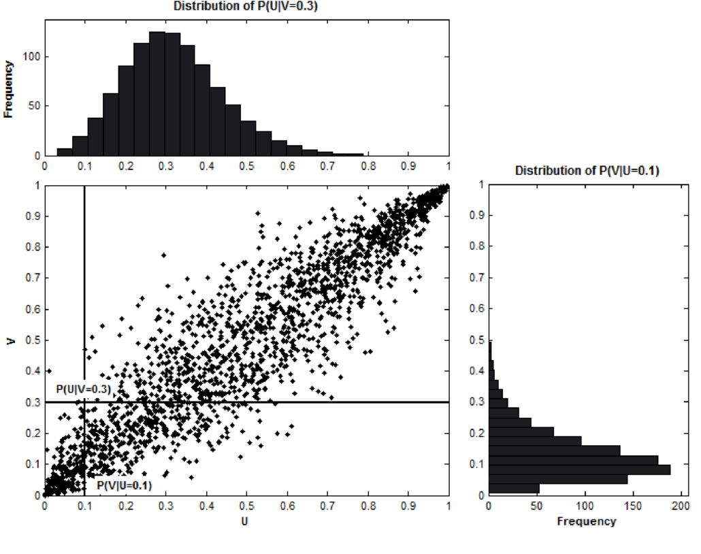
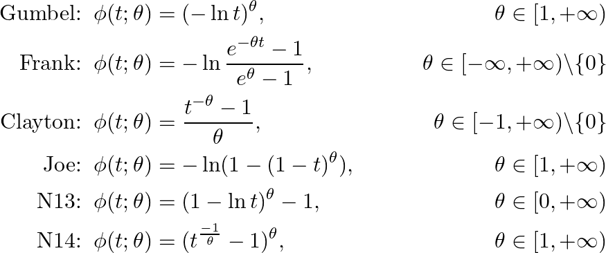
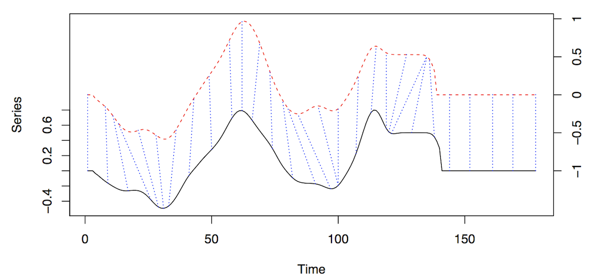

23 Correlation, Association, and Distance
TOC
- Misc
- Continuous
- Spearmans Rank
- Kendalls Tau
- Bayesian
- Discrete
- Phi Coefficient
- Cramers V
- Polychoric
- Tetrachoric
- Mixed
- Biseries
- Polydi
- Polyseries
- X2Y
- Nonlinear
- (xi) coefficient
- Copulas
- Timeseries
- CCF
- Distances
Misc
- Also see
- EDA >> Correlation
- Notebook >> Statistical Inference >> Correlation
- E(|x)=0 is equivalent to Cov(x,)=0 or Cor(x,)=0
- A negative correlation between variables is also called anticorrelation or inverse correlation
- Independence - two random variables are independent if the product of their individual probability density functions equals the joint probability density function
- Partial Correlation

- Measures the association (or correlation) between two variables when the effects of one or more other variables are removed from such a relationship.
- In the above equation, I think its the partial correlation between x and y given z.
psych::partial.r(y ~ x - z, data)- Resources
- Also see notebook for a method using regression models
- Measures the association (or correlation) between two variables when the effects of one or more other variables are removed from such a relationship.
Continuous
Spearmans Rank

di: the difference in ranks for the ith observation
Measures how well the relationship between the two variables can be described by a monotonic function
Rank correlation measures the similarity of the order of two sets of data, relative to each other (recall that PCC did not directly measure the relative rank).
- Values range from -1 to 1 where 0 is no association and 1 is perfect association
- Negative values dont mean anything in ranked correlation, so just remove the negative
Linear relationship is a specific type of monotonic relationship where the rate of increase remains constant in other words, unlike a linear relationship, the amount of change (increase or decrease) in a monotonic relationship can vary.
See bkmks for CIs
Packages
- {stats::cor.test(method = spearman)}
- {DescTools::SpearmanRho}
- {wCorr} - Pearson, Spearman, polyserial, and polychoric correlations, in weighted or unweighted form
Kendalls Tau
- Non-parametric rank correlation
- non-parametric because it only measures the rank correlation based on the relative ordering of the data (and not the specific values of the data).
- Should be pretty close to spearmans rank but a potentially faster calculation
- Flavors: a, b (makes adjustment for ties), c (for different sample sizes for each variable)
- Use Tau-b if the underlying scale of both variables has the same number of possible values (before ranking) and Tau-c if they differ.
- e.g. one variable might be scored on a 5-point scale (very good, good, average, bad, very bad), whereas the other might be based on a finer 10-point scale. In this case, Tau-c would be recommended.
- Packages
- {stats::cor.test(method = kendall)} - Doesnt state specifically but I think it calculates a and b depending on whether ties are present or not
- {DescTools} - has all 3 flavors
- Non-parametric rank correlation
Bayesian
- Steps: {brms}
- List the variables youd like correlations for within
mvbind(). - Place the
mvbind()function within the left side of the model formula. - On the right side of the model formula, indicate you only want intercepts (i.e., ~ 1).
- Wrap that whole formula within
bf(). - Then use the + operator to append
set_rescor(TRUE), which will ensure brms fits a model with residual correlations. - Use non-default priors and the resp argument to specify which prior is associated with which criterion variable
- List the variables youd like correlations for within
- Gaussian
- Example: multiple variables
- Steps: {brms}
f9 <-
brm(data = d,
family = gaussian,
bf(mvbind(x_s, y_s, z_s) ~ 0,
sigma ~ 0) +
set_rescor(TRUE),
prior(lkj(2), class = rescor),
chains = 4, cores = 4,
seed = 1)
## Residual Correlations:
## Estimate Est.Error l-95% CI u-95% CI Rhat Bulk_ESS Tail_ESS
## rescor(xs,ys) 0.90 0.02 0.87 0.93 1.00 3719 3031
## rescor(xs,zs) 0.57 0.07 0.42 0.69 1.00 3047 2773
## rescor(ys,zs) 0.29 0.09 0.11 0.46 1.00 2839 2615Standardized data is used here but isnt required
- Will need to set priors though (see article for further details)
Since the data is standardized, the sd can be fixed at 1
- brms models log of sd by default, hence
sigma ~ 0since log 1 = 0
- brms models log of sd by default, hence
Correlations are the estimates for
rescor(xs,ys),rescor(xs,zs)rescor(ys,zs)Student t-distribution
- If the data has any outliers, pearsons coefficient is substantially biased.
- Example: correlation between x and y

f2 <-
brm(data = x.noisy,
family = student,
bf(mvbind(x, y) ~ 1) + set_rescor(TRUE),
prior = c(prior(gamma(2, .1), class = nu),
prior(normal(0, 100), class = Intercept, resp = x),
prior(normal(0, 100), class = Intercept, resp = y),
prior(normal(0, 100), class = sigma, resp = x),
prior(normal(0, 100), class = sigma, resp = y),
prior(lkj(1), class = rescor)),
iter = 2000, warmup = 500, chains = 4, cores = 4,
seed = 210191)
## Population-Level Effects:
## Estimate Est.Error l-95% CI u-95% CI Rhat Bulk_ESS Tail_ESS
## x_Intercept -2.07 3.59 -9.49 4.72 1.00 2412 2651
## y_Intercept 1.93 7.20 -11.31 16.81 1.00 2454 2815
##
## Family Specific Parameters:
## Estimate Est.Error l-95% CI u-95% CI Rhat Bulk_ESS Tail_ESS
## sigma_x 18.35 2.99 13.12 24.76 1.00 2313 2816
## sigma_y 36.52 5.90 26.13 49.49 1.00 2216 3225
## nu 2.65 0.99 1.36 4.99 1.00 3500 2710
## nu_x 1.00 0.00 1.00 1.00 1.00 6000 6000
## nu_y 1.00 0.00 1.00 1.00 1.00 6000 6000
##
## Residual Correlations:
## Estimate Est.Error l-95% CI u-95% CI Rhat Bulk_ESS Tail_ESS
## rescor(x,y) -0.93 0.03 -0.97 -0.85 1.00 2974 3366- N = 40 simulated from a multivariate normal with 3 outliers
- Correlation is the
rescor(x,y)estimate -0.93; true value is -0.96- Using a pearson coefficient, cor = -0.6365649
- Using brms::brm with family = gaussian,
rescor(x,y)estimate -0.61
Discrete
- Misc
- Also see Multiple Correspondence Analysis (MCA) (see bkmks >> Features >> Reduction)
- Binary vs Binary Similarity measures (paper)
- Phi Coefficient - Used for binary variables when the categories are truly binary and not crudely measuring some underlying continuous variable (i.e. dichotomization of a continuous variable)
- a Pearson correlation coefficient estimated for two binary variables will return the phi coefficient (Phi coefficient wiki)
- (contingency table) Two binary variables are considered positively associated if most of the data falls along the diagonal cells. In contrast, two binary variables are considered negatively associated if most of the data falls off the diagonal
- Also see StackExchange discussion on the difference between Phi Coefficient and Tetrachoric correlation
- {DescTools::Phi}
- Cramers V - Association between two nominal variables
- see Discrete Analysis notebook
- {DescTools::CramerV}
- Polychoric - Suppose each of the ordinal variables was obtained by categorizing a normally distributed underlying variable, and those two unobserved variables follow a bivariate normal distribution. Then the (maximum likelihood) estimate of that correlation is the polychoric correlation.
- {polycor}
- {psych::polychoric}
- For correct=FALSE, the results agree perfectly with {polycor}
- For very small data sets, the correction for continuity for the polychoric correlations can lead to difficulties, particularly if using the global=FALSE option, or if doing just one correlation at a time. Setting a smaller correction value (i.e., correct =.1) seems to help.
- {DescTools::CorPolychor}
- {wCorr} - Pearson, Spearman, polyserial, and polychoric correlations, in weighted or unweighted form
- Tetrachoric - Used for binary variables when those variables are a sort of crude measure of an underlying continuous variable
- Also see StackExchange discussion on the difference between Phi Coefficient and Tetrachoric correlation
- Example of appropriate use case: Suppose there are two judges who judge cakes, say, on some continuous scale, then based on a fixed, perhaps unknown, cutoff, pronounce the cakes as bad or good. Suppose the latent continuous metric of the two judges has correlation coefficient .
- the contingency tables are balanced row-wise and col-wise, you get good correlation between the two metrics, but the tetrachoric tends to be a bit larger than the phi coefficient. When the cutoffs are somewhat imbalanced, you get slightly worse correlation between the metrics, and the phi appears to shink towards zero.
- The estimation procedure is two stage ML.
- Cell frequencies for each pair of items are found. Cells with zero counts are replaced with .5 as a correction for continuity (correct=TRUE).
- The marginal frequencies are converted to normal theory thresholds and the resulting table for each item pair is converted to the (inferred) latent Pearson correlation that would produce the observed cell frequencies with the observed marginals
- {psych::tetrachoric}
- The correlation matrix gets printed, but the correlations can also be extracted with
$rho - Can be sped up considerably by using multiple cores and using the parallel package. The number of cores to use when doing polychoric or tetrachoric may be specified using the options command. (e.g
options("mc.cores"=4);) smooth = TRUE- For sets of data with missing data, the matrix will sometimes not be positive definite. Uses a procedure to transform the negative eigenvalues.- For relatively small samples with dichotomous data if some cells are empty, or if the resampled matrices are not positive semi-definite, warnings are issued. this leads to serious problems if using multi.cores. The solution seems to be to not use multi.cores (e.g., options(mc.cores =1)
- The correlation matrix gets printed, but the correlations can also be extracted with
Mixed
- Misc
- {psych::mixedCor} - finds Pearson correlations for the continous variables, polychorics for the polytomous items, tetrachorics for the dichotomous items, and the polyserial or biserial correlations for the various mixed variables (no polydi?)
- Biserial - correlation between a continuous variable and binary variable, which is assumed to have resulted from a dichotomized normal variable
- Polydi - correlation between multinomial variable and binary variable
- Polyserial - polychoric correlation between a continuous variable and ordinal variable
- based on the assumption that the joint distribution of the quantitative variable and a latent continuous variable underlying the ordinal variable is bivariate normal
- {polycor}
- {psych::polyserial}
- {wCorr} - Pearson, Spearman, polyserial, and polychoric correlations, in weighted or unweighted form
- X2Y
- Handles types: continuous-continuous, continuous-categorical, categorical-continuous and categorical-categorical
- Calculates the % difference in prediction error after fitting a decision tree between two variables of interest and the mean (numeric) or most frequent (categorical)
- Function is available through a script (Code >> statistical-testing >> correlation)
- article with documentation and usage, https://rviews.rstudio.com/2021/04/15/an-alternative-to-the-correlation-coefficient-that-works-for-numeric-and-categorical-variables/
- All x2y values where the y variable is continuous will be measuring a % reduction in MAE. All x2y values where the y variable is categorical will be measuring a % reduction in Misclassification Error. Is a 30% reduction in MAE equal to a 30% reduction in Misclassification Error? It is problem dependent, theres no universal right answer.
- On the other hand, since (1) all x2y values are on the same 0-100% scale (2) are conceptually measuring the same thing, i.e., reduction in prediction error and (3) our objective is to quickly scan and identify strongly-related pairs (rather than conduct an in-depth investigation), the x2y approach may be adequate.
- Not symmetric, but can average both scores to get a pseudo-symmetric value
- Bootstrap CIs available
- Copulas
- latentcor PKG: semi-parametric latent Gaussian copula models
Non-linear
- Misc
- (xi) coefficient
- Paper: A New Coefficient of Correlation
- Article: Exploring the XI Correlation Coefficient
- Excels at oscillatory and highly non-monotonic dependencies
XICOR::xicor- calculates and performs a significance test (H0: independent)XICOR::calculateXIjust calculates the coefficient
- Properties (value ranges; interpretation)
- If y is a function of x, then goes to 1 asymptotically as n (the number of data points, or the length of the vectors x and y) goes to Infinity.
- If y and x are independent, then goes to 0 asymptotically as n goes to Infinity.
- Values can be negative, but this negativity does not have any innate significance other than being close to zero
- n > 20 necessary
- n larger than about 250 probably sufficient to get a good estimate
- Fairly efficient (O(nlogn), compared to some more powerful methods, which are O(n2))
- It measures dependency in one direction only (is y dependent on x not vice versa)
- Doesnt tell you if the relationship is direct or inverse
- Copula
- Misc
- Notes from: https://hudsonthames.org/copula-for-pairs-trading-introduction/
- Also see Forecasting, Nonlinear >> Misc >> packages, copulas
- Used in finance for non-linear and tail risk qualities but currently doesnt take autocorrelation into account
- Used to create joint distributions that can be used to describe associated entities that may not be from the same distribution
- If each entity has a different behavior, we cannot assume they follow the same distribution.
- And most importantly, each entity is likely to influence the others we cannot assume they are independent. Take product cannibalization, for example: In retail, a successful product pulls demand away from similar items in its category.
- Hence, each entity may have a different distribution. Plus, we should find a way to model their correlation, since independence is seldom feasible in most practical scenarios.
- Understanding Inverse Transform Sampling (video) will help with understanding the copula mathematics
- Relationship between PDF and CDF (e.g. exponential distribution)
.png)
- Probability x 2 is
- the shaded area of the PDF
- Is the output of CDF(x) where x = 2
- Equivalence between the PDF and CDF shown in the top integral
- More general form shown in the bottom integral
- Probability x 2 is
- The inverse of the CDF give you the value of x for any probability
.png)
- e.g. CDF-1(0.7) = 2 and CDF-1(0.5) = 0.7
- Whichever distributions CDF-1 is used, the output of that function will be from that distribution (e.g. 2, 0.7)
- Mathematically:

- Says take a sample from a Uniform distribution, plug that into the inverse CDF and get a sample from the that CDFs distribution
- Mathematically:
- Example: Gamma Distribution
- Relationship between PDF and CDF (e.g. exponential distribution)
- Misc
gamma1 <- rgamma(1e6, shape=1)
hist(gamma1, main='gamma distribution', cex.main=1.3, cex.lab=1.3, cex.axis=1.3, prob='true')
# pgamma is the cdf of gamma
u <- pgamma(gamma1, shape=1)
hist(u, main='Histogram of uniform samples from gamma CDF', cex.main=1.3, cex.lab=1.3, cex.axis=1.3, prob='true')
# qgamma is the inverted cdf of gamma
gamma_transformed <- qgamma(u, shape=1)
hist(gamma_transformed, main='Histogram of transformed gamma', cex.main=1.3, cex.lab=1.3, cex.axis=1.3,prob='true')- Sklars Theorem
- guarantees the existence and uniqueness of a copula for two continuous random variables
- For two random variables S1, S2 in [-inf, inf]. S1 and S2 have their own fixed, continuous CDFs, F1, F2. Consider their (cumulative) joint distribution
 Now take the uniformly distributed quantile random variable U1(S1), U2(S2). For every pair, (u1, u2), drawn from the pairs quantile, we define the bivariate copula C: [0,1] x [0,1] > [0,1] as:
Now take the uniformly distributed quantile random variable U1(S1), U2(S2). For every pair, (u1, u2), drawn from the pairs quantile, we define the bivariate copula C: [0,1] x [0,1] > [0,1] as:  where F1-1 and F2-1 are inverses (i.e. solved for S) of the marginal CDFs F1 and F2.
where F1-1 and F2-1 are inverses (i.e. solved for S) of the marginal CDFs F1 and F2.
- A copula is just the joint cumulative density for quantiles of a pair of random variables.
- H is some function. It varies with the type of copula (see types section).
- See Probability notebook, Simulation of a random variable values of a distribution using the distributions cdf section and bookmarks similarly named for some intuition behind whats happening in Sklars Theorem
- If the 1st quantile is from 0 to 0.25 then randomly select some numbers in that range using U(0,1)
- This is unclear to me, he might be calling every number drawn from U(0,1) a quantile
- But I think because youre using quantiles its non-linear which kind a makes sense (thinking about why quantile regression is used sometimes), so maybe he is talking about deciles, quartiles, etc.
- Maybe (see third line of this section) each quantile is treated as a separate dateset where numbers are drawn from U(0,1) and copula calculated.
- Find the inverse CDF of the distribution
- Plug those numbers from the 1st quantile into the inverse CDF to get the simulated values
- Repeat for other random variable
- If the 1st quantile is from 0 to 0.25 then randomly select some numbers in that range using U(0,1)
-  The scatter plot crosshair says of the value of the inverse CDF of variable U using input 0.1 corresponds to the value of the inverse CDF of variable V using input 0.3. The closer the points are to the y = x line the greater the association between them (like a Q-Q plot)
- Mathematically the cumulative conditional probabilities shown in the scatter plot are given by taking partial derivatives of the joint inverse CDF:

- aside: taking the derivative of a (not inverse) marginal (not joint) CDF is the pdf
- The copula density is defined as:
 which is a probability density. Larger the copula density, the denser the clump of points in the scatter plot
which is a probability density. Larger the copula density, the denser the clump of points in the scatter plot
- Mathematically the cumulative conditional probabilities shown in the scatter plot are given by taking partial derivatives of the joint inverse CDF:
- Coefficients of Lower and Upper Tail Dependence: quantifies the strength of association during joint tail events for each random variables distribution
- Not discernible from plots, so needs to be calculated
- upper tail dependencies refers to the how closely two variables increase together during an extreme positive event
- e.g. how strongly 2 stocks move together during an huge gain
- lower tail dependencies are similar except the event is in extreme negative direction
- For stocks at least, lower tail dependencies tend to be much stronger than upper tail tendencies
- Types
- Not including the actual bivariate copula formulas because Im not sure how the H (see bivariate copula def above) works in practice (and I dont want to frustrate future me). I am including descriptions and important characteristics which should have practical applicability. See article for copula formulas.
- Archimedean
- parametric and uniquely determined by generator functions, , that use a parameter,
- measures how closely the two random variables are related, and its exact range and interpretation are different across different Archimedean copulas
- Generators seem to act like the inverse CDFs in the bivariate copula formula
- generators:
- symmetric and scalable to multiple variables, although a closed-form solution may not be available in higher dimensions
- parametric and uniquely determined by generator functions, , that use a parameter,
- Elliptical
- symmetric and easily extended to multiple variables
- Assumes symmetry on both upward co-moves and downward moves (i.e. lacks flexibility)
- Gaussian - uses Gaussian inverse CDF and a correlation matrix
- Student-t - similar as Gaussian but with degrees of freedom
- Mixed
- weighted ensemble of the copulas above
- helps with overfitting and more finely calibrating upper and lower tail dependencies
- weights should sum to 1
- Other Notes
- the wording below is a bit confusing
- dont have I think means doesnt have the capability to detect or isnt sensitive to
- stronger center dependence might mean a greater ability to detect or maybe a center dependence bias
- Im not even sure what a center dependency means
- Frank and Gaussian copulas dont have tail dependencies
- Gaussian contributed to 2008 financial crisis
- Frank copula has a stronger center dependence than a Gaussian (?)
- Copulas with upper tail dependence: Gumbel, Joe, N13, N14, Student-t.
- Copulas with lower tail dependence: Clayton, N14 (weaker than upper tail), Student-t.
- the wording below is a bit confusing
- Notes
- Definition

- Copulas are joint cumulative distribution functions (c.d.f.) for unit-uniform random variables
- probability integral transform

- states that we can transform any continuous random variable to a uniform one by plugging it into its own c.d.f.
- transform a uniform random variable to any continuous random variable

- So plugging a Uniform random variable into the quantile function which is the inverse of the cdf and outputs a continuous random variable
- Gaussian Copula

- Definition
- Example
- Defining a (generic) Copula (aka joint cdf) for two random variables

- where FX(x), FY(y) are cdfs of Gamma, Beta distributions respectively
- Defining a Gaussian Copula for these 2 random variables

- Format: Copula = joint cdf(quantile(cdf(gamma_random_variable), cdf(gamma_random_variable))
- Construct a Copula
- Transform the Gamma and Beta marginals into Uniform marginals via the respective c.d.f.s
- Transform the Uniform marginals into standard Normal marginals via the quantile functions
- Define the joint distribution via the multivariate Gaussian c.d.f. with zero mean, unit variance and non-zero covariance (covariance matrix R)
- Sample from a Copula
- The bi-variate random variable has the above properties. (standard Gamma/Beta marginals with Gaussian Copula dependencies)
- Steps (reverse of the copula process)
- Draw a sample from a bi-variate Gaussian with mean zero, unit variance and non-zero covariance (covariance matrix R).
- You now have two correlated standard Gaussian variables.
- Transform both variables with the standard Gaussian c.d.f. (i.e. plugging each into a gaussian cdf)
- You now have two correlated Uniform variables. (via probability integral transform)
- Transform one variable with the standard Beta quantile function and the other variable with the Gamma quantile function
- Draw a sample from a bi-variate Gaussian with mean zero, unit variance and non-zero covariance (covariance matrix R).
- Code (Julia)
- Defining a (generic) Copula (aka joint cdf) for two random variables
using Measures
Random.seed!(123)
# Step 1: Sample bi-variate Gaussian data with zero mean and unit variance
mu = zeros(2)
R = [1 0.5; 0.5 1]
sample = rand(MvNormal(mu,R),10000)
# Step 2: Transform the data via the standard Gaussian c.d.f.
sample_uniform = cdf.(Normal(), sample)
# Step 3: Transform the uniform marginals via the standard Gamma/Beta quantile functions
sample_transformed = sample_uniform
sample_transformed[1,:] = quantile.(Gamma(),sample_transformed[1,:])
sample_transformed[2,:] = quantile.(Beta(),sample_transformed[2,:])- Visuals

- Note: We could drop the zero-mean, unit-variance assumption on the multivariate Gaussian.
- In that case we would have to adjust the Gaussian c.d.f. to the corresponding marginals in order to keep the integral probability transform valid.
- Since we are only interested in the dependency structure (i.e. covariances), standard Gaussian marginals are sufficient and easier to deal with
- Example: Gaussian Copula derived from beta and gamma vectors (i.e. marginals) (article)

- In this example, marginal 1 and marginal 2 are sampled from the beta and gamma distributions, respectively
# draw our data samples from 2 distributions, a beta and a gamma -
beta1 = stats.distributions.beta(a=10, b=3).rvs(1000)
gamma1 = stats.distributions.gamma(a=1, loc=0).rvs(1000)
# - we use the emprical cdf instead of beta's or gamma's cdf
# - we do this to show that copulas can be computed regardless of the
# underlying distributions
ecdf1 = ECDF(beta1) # F(beta1) = u1
ecdf2 = ECDF(gamma1) # F(gamma1) = u2
# small correction to remove infinities
ecdf1.y[0]=0.0001
ecdf2.y[0]=0.0001
x1=stats.norm.ppf(ecdf1.y) # ^-1(u1)
x2=stats.norm.ppf(ecdf2.y) # ^-1(u1)
# Parameters of 2
mu_x = 0
variance_x = 1
mu_y = 0
variance_y = 1
cov=0.8
# I think this is just some preprocessing to get the vectors into the correct shape for the mvn function
X, Y = np.meshgrid(x1,x2)
pos = np.empty(X.shape + (2,))
pos[:, :, 0] = X; pos[:, :, 1] = Y
#remember phi2 is just a multivariate normal CDF
rv = stats.multivariate_normal([mu_x, mu_y], [[variance_x, cov], [cov, variance_y]])
phi2=rv.cdf(pos)- Note how Empirical CDFs are used which what youd use if you didnt know the underlying distribution of your two vectors
- See Distributions >> Terms >> Empirical CDFs
- Steps
- Compute ECDFs of vectors with unknown distributions
- Apply Gaussian Copula formula
- Compute gaussian inverse CDFs for each vector
- Decide on parameter values of multivariate gaussian distribution
- mean, variance, and covariance
- Create multivariate gaussian distribution
- Apply multivariate gaussian CDF to the inverse CDFs of the two vectors
Time Series
- CCF (cross-correlation function)
- The correlation between two stationary series
- the set of sample correlations between xt+h and yt for h = 0, 1, 2, 3, and so on. A negative value for h is a correlation between the x-variable at a time before t and the y-variable at time t. For instance, consider h = 2. The CCF value would give the correlation between xt2 and yt.
- When calculating correlations between lags of a variable and the variable itself (ACF) or another variable (CCF) you cant, for example in a CCF, simply take corr(xt-k, yt) for the correlation of x at lag k and y and repeat for all the lags of x. Since the corr formula/function requires the mean of the series, you would be using a different mean for xk for each calculation of the correlation of each pair. The assumption is that the series are (second-order?) stationary and therefore have a constant mean (i.e. each series has 1 mean (and variance)), so the mean(s) of (each) original series should be used in the calculations of the correlations.
- source: Modern Applied Statistics with S, Venables and Ripley
- Compared one against the other in COVID-19 CFR project and they actually produce similar patterns but different values of the CCF. The corr method produce inflated CCF values.
- we expect about 1.75 false alarms out of the 35 sample cross-correlations even after prewhitening
- Terms
- In a cross-correlation in which the direction of influence between two time-series is hypothesized or known,
- the influential time-series is called the input time-series
- the affected time-series is called the output time-series.
- When one or more xt+h , with h negative, are predictors of yt, it is sometimes said that x leads y.
- When one or more xt+h, with h positive, are predictors of yt, it is sometimes said that x lags y.
- In a cross-correlation in which the direction of influence between two time-series is hypothesized or known,
- Avoid spurious correlations
- Make sure theres a theoretical reason for the two series to be related
- **Autocorrelation of at least one series should be removed (transformed to white noise)
- With autocorrelation present:
- the variance of cross-correlation coefficient is high and therefore spurious correlations are likely
- Significance calculations are no longer valid since the CCF distribution will not be normal and the variance is no longer 1/n
- With autocorrelation present:
- a problem even with stationary series (even more so with non-stationary series)
- Steps
- Test for stationarity
- find number of differences to make the series stationary
- Not sure if each series should be differenced the same number of times
- Why would you test a seasonal series and non-seasonal series for an association.
- the requirement is stationarity, so maybe try using the highest difference needed between both series
- In dynamic regression, Hyndman says difference all variables if one needs differencing, so proabably applicable here.
- Some examples also used log transformation , but when I did, it produced nonsensical CCF values. (covid cfr project). So, beware.
- Not sure if each series should be differenced the same number of times
- seasonal difference > difference
- (optional) lag scatter plots if the differenced series and look for patterns to get an idea of the strength of the linear correlation
- if theres a nonlinear pattern, might be difficult or might not to use a nonlinear or nonparametric correlation function. See 3rd bullet under CCF header above for discussion of stationarity assumption. May not be necessary with another correlation type.
- prewhiten both series (cryer, chan method)
- apply correlation function
- Prewhitening
- Example from COVID-19 CFR project
# numbers of differences
ind_cases_diff <- forecast::ndiffs(ind_cases_ts)
ind_deaths_diff <- forecast::ndiffs(ind_deaths_ts)
# seasonal
ind_cases_sdiff <- forecast::nsdiffs(ind_cases_ts)
ind_deaths_sdiff <- forecast::nsdiffs(ind_deaths_ts)
# no seasonal diffs needed
ind_cases_proc <- diff(ind_cases_ts, ind_cases_diff)
ind_deaths_proc <- diff(ind_deaths_ts, ind_deaths_diff)
# fit AR model with processed input series
ind_cases_ar <- ind_cases_proc %>%
ts_tsibble() %>%
model(AR(value ~ order(p = 1:30), ic = "aicc"))
# pull AR coefs
ind_ar <- coef(ind_cases_ar) %>%
filter(stringr::str_detect(term, "ar")) %>%
pull(estimate)
# linearly filter both input and output series using coefs
ind_cases_fil <- stats::filter(ind_cases_proc, filter = c(1, -ind_ar),
method = 'convolution', sides = 1)
ind_deaths_fil <- stats::filter(ind_deaths_proc, filter = c(1, -ind_ar),
method = 'convolution', sides = 1)
# spike at -20 with corr = 0.26; nonsensical lags at -4 and -15, -68
ggCcf(ind_cases_fil, ind_deaths_fil)- Distances
- Dynamic Time Warping distance (DTW)
- dtw_basic( ) , dtw2( )
- Compares 2 series by warping the time axis to bring them as close as possible to each other and measuring the sum of the distances between the points
- symmetric (i.e. dist from A to B equals the distance from B to A) only if:
- either symmetric1 or symmetric2 step patterns are used
- series are equal length after any constraints are used
- algorithm compares two series by calculating a local cost matrix (LCM) and traversing it to find the optimal warping path (minimal cost)
- list of components:
- step pattern that determines how the alg traverses the rows of the LCM to find the optimal path
- window range that limits the number lcm calculations for each point
- Dynamic Time Warping distance (DTW)

- Figure shows alignment of two series, x and y.
- The initial and final points of the series must match, but other points along the axis may be warped in order to minimize the distance/cost.
- The dashed blue lines are the warp curves and show how some points are mapped to each other.
- X is the query (or test) series
- Yis the reference series
- Steps
- Calc LCM matrix for series X and Y
- Simultaneously move along each row of the LCM using a chosen step pattern (see window constraint to get part of a visual of this process)
- The minimum lcm for each point along x-axis is found. The sequence of minimum lcms or minimum alignment is .
- Calc the cost, DTWp, using the lcms in the minimum alignment

- m is a per-step weighting coefficient (edge weight in patterns fig)
- M is the normalization constant
- k is a pairs of points (or position along the x-axis) in the minimum alignment
- dtw_basic( ) sets p = 2 (the dtw in the dtw pkg doesnt use p in this equation)
- Choose the alignment with the lowest cost, DTWp (i.e. sum of lcm distances for that alignment)
- Components
- Local Cost Matrix (LCM)
- Computed for each pair of series that are compared
- The Lp norm (distance) between the query series and reference series

- xi and yj are elements of the test and reference time series
- v stands for variable which is for comparing multivariate series
- i.e. the Lp norm for each pair of points is summed over all variables in the multivariate series
- p is the order of the norm used
- e.g. 1 is Manhattan distance; 2 is Euclidean
- ** Choice of p only matters if multivariate series are being used **
- Each lcm(i , j) value fills a spot in the n x m matrix, LCM (where 1 < i < n and 1 < j < m)
- Step Patterns
- step.pattern arg
- Determines how algorithm moves across the rows of the LCM to create alignments (time axis warps)
- Each pattern is a set of rules and weights
- the rules are used to create different alignments of the LCM (i.e warping of the time axis)
- the edge weights, m, are used the DTW calculation

- Patterns in fig
- symmetric1 symmetric2 asymmetric rabinerJuangStepPattern(4, c, TRUE) (i.e., Rabiner-Juangs type IV with slope weighting)
- Only some of the patterns are normalizable (i.e. M is used in the DTW equation below) (normalize arg)
- Normalization may be important when
- comparing alignments between time series of different lengths, to decide the best match (e.g., for classification)
- When performing partial matches (?)
- For dtw_basic( ), doc says only supported with symmetric2
- rabinerJuangStepPattern() with slope weighting types c and d are normalizable
- symmetricP* (where * is a number) are all normalizable (not shown in fig)
- Normalization may be important when
- dtwclust pkg author says symmetric1 most commonly used. dtw pkg and dtw_basic( ) use symmetric2 by default.
- Patterns in fig
- Window Constraints
- Limits the region that the lcm calculation takes place.
- Reduces computation time but makes sense that you dont want to compare points that are separated by to large a time interval
- Sakoe-Chiba window creates a calculation region along the diagonal of the LCM
.png)
- 1 set of lcm calculations occurs within the horizontal, rectangular block of the query series and the vertical, rectangular block of the reference series.
- Sakoe-Chiba requires equal length series but a slanted band is equivalent and works for unequal length series.
- Slanted band is whats used by dtwclust when the window constraint is used.
- Optimal window size needs to be tuned
- can marginally speed up the DTW calculation, but they are mainly used to avoid pathological warping
- w, the window size, is ~half the size of the actual region covered
- [(i, j - w), (i, j + w)] which has 2w + 1 elements
- A common w is 10% of the sample size, smaller sizes sometimes produce better results
- Limits the region that the lcm calculation takes place.
- Lower Bounds (LB)
- dtw_lb( )
- uses a lower bound the dtw distance to speed up computation
- a considerably large dataset would be needed before the overhead of DTW becomes much larger than that of dtw_lbs iterations
- may only be useful if one is only interested in nearest neighbors, which is usually the case in partitional clustering
- Steps
- Calculates an initial estimate of a distance matrix between two sets of time series using lb_improved( )
- involves the lower bound calculation; didnt get into it
- Uses the estimate to calculate the corresponding true DTW distance between only the nearest neighbors (row-wise minima of dist.matrix) of each series in x found in y
- Updates distance matrix with DTW values
- Continues iteratively until no changes in the nearest neighbors occur
- Calculates an initial estimate of a distance matrix between two sets of time series using lb_improved( )
- Only if dataset is very large will this method will be faster than dtw_basic( ) in the calculation of DTW
- Not symmetric, no multivariate series
- Requires
- both series to be equal length
- window constraint defined
- norm defined
- Value of LB (tightness of envelope around series) affected by step pattern which is set in dtw_basic( ) and included via in dtw_lb
- size of envelopes in general: LB_Keoghp < LB_Improvedp < DTWp
- Local Cost Matrix (LCM)
- Soft DTW
- sdtw( )
- regularizes DTW by smoothing it \_()_/
- smoothness controlled by gamma arg
- default: 0.01
- with lower values resulting in less smoothing
- smoothness controlled by gamma arg
- Uses a gradient to efficiently calculate cluster prototypes
- not recommended for stand-alone distance calculations
- negative values can happen
- symmetric and handles series of different lengths and multivariate series
- Shape-based distance (SBD)
- SBD( )
- used in k-Shape Clustering
- based on the cross-correlation with coefficient normalization (NCCc) sequence between two series
- fast (uses FFT to calc), competitive with other distance algorithms, and supports series with different lengths
- symmetric, no multivariate series
- In preprocessing arg, set to z-normalization

- Triangular global alignment kernel distance
- GAK( )
- regularizes DTW by smoothing it \_()_/
- symmetric when normalized (dist a to b = dist b to a)
- supports multivariate series and series of different length (as long as one series isnt half the length of the other)
- slightly more computationally expensive than DTW


- ,sigma, can defined by the user but if left as NULL, the function estimates it
- T is the triangular constraint and is similar to the window constraint in DTW but there no arg for it, so I guess its taken care of
- no idea what i and j refer to
- would have to look it up in the original paper or there is a separate website and package for it
- if normalize = TRUE, then a distance is returned, can be compared with the other distance measure, and used in clustering
- if FALSE, a similarity is returned